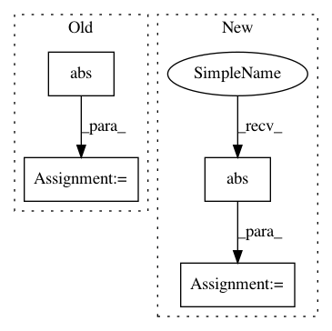

240d23ec41ee51c72a69fda93148cb534a6688ec,aif360/algorithms/inprocessing/celisMeta/StatisticalRate.py,StatisticalRate,getFuncValue,#StatisticalRate#,95
Before Change
def getFuncValue(self, dist_params, a,b, params, samples, z_0, z_1):
res = []
for x in samples:
t = abs(self.getValueForX(dist_params, a,b, params, samples, z_0, z_1, x, 0))
res.append(t)
l_1 = params[0]
l_2 = params[1]
After Change
def getFuncValue(self, dist, a, b, params, samples, z_prior):
l_1, l_2 = params
exp = np.mean(np.abs(self.getValueForX(dist, a, b, params, z_prior,
samples)))
result = exp - b*l_1 - b*l_2
if l_1 > 0:
result += (b-a)*l_1
if l_2 > 0:
In pattern: SUPERPATTERN
Frequency: 4
Non-data size: 4
Instances
Project Name: IBM/AIF360
Commit Name: 240d23ec41ee51c72a69fda93148cb534a6688ec
Time: 2020-08-05
Author: hoffman.sc@gmail.com
File Name: aif360/algorithms/inprocessing/celisMeta/StatisticalRate.py
Class Name: StatisticalRate
Method Name: getFuncValue
Project Name: librosa/librosa
Commit Name: b7c2f6e9ccd65a53d8ae9aa0d3ee287ce9c93019
Time: 2014-02-07
Author: brm2132@columbia.edu
File Name: librosa/feature.py
Class Name:
Method Name: chromagram
Project Name: SheffieldML/GPy
Commit Name: 2dc1b14934a1d22855e81e77a0f2eee52a0d1f7f
Time: 2015-10-04
Author: alan.daniel.saul@gmail.com
File Name: GPy/inference/latent_function_inference/laplace.py
Class Name: Laplace
Method Name: rasm_mode
Project Name: librosa/librosa
Commit Name: b7c2f6e9ccd65a53d8ae9aa0d3ee287ce9c93019
Time: 2014-02-07
Author: brm2132@columbia.edu
File Name: librosa/feature.py
Class Name:
Method Name: logfsgram